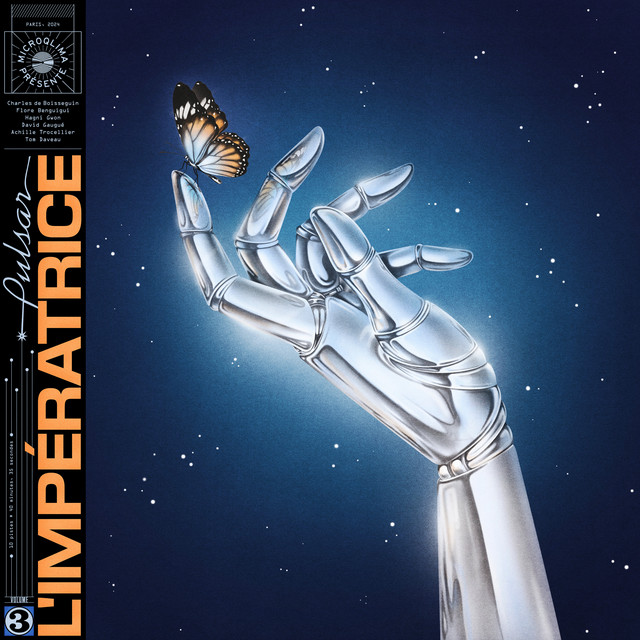

LImperatrice - Pulsar



Información del álbum facilitada por discogs.com:
Fecha de lanzamiento: 2024
Géneros: Electronic, Pop
Estilos: Nu-Disco
Pais: Canada
Votos: Media de 4.67 con 3 votos
Sello: CBS
Tracklist:
A1. Cosmogonie 2:50
A2. Amour Ex Machina (feat. Fils Cara) 4:04
A3. Me Da Igual 3:29
A4. Love From The Other Side (feat. Nicky Green) 4:09
A5. Danza Marilù (feat. Fabiana Martone) 4:04
B6. Any Way (feat. Maggie Rogers) 5:10
B7. Déjà-Vue 3:56
B8. Girl! (feat. ZADI) 3:54
B9. Sweet & Sublime (feat. Nit & Erick The Architect & ZADI) 4:46
B10. Pulsar (feat. DJ Greem) 4:14